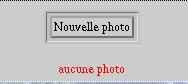
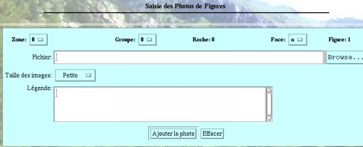

V- UTILISATION DE L'APPLICATION
5- Saisie des photographies
V- UTILISATION DE L'APPLICATION
5- Saisie des photographies
En dessous du formulaire peremettant l'affichage du contenu des tables zone, roche, face, figure historique, gravure protohistorique, association, se trouve un formulaire permettant d'ajouter, de modifier ou bien de supprimer des photos relatives à ces tables.
 Par exemple,
lorsqu'il n'y a pas encore de photographies saisies, le bouton Nouvelle
photo suivant apparaît au-dessous du formulaire figure :
Par exemple,
lorsqu'il n'y a pas encore de photographies saisies, le bouton Nouvelle
photo suivant apparaît au-dessous du formulaire figure :

 S'il l'on
clique sur le bouton photo, le formulaire de saisie des photographies
suivant apparaît:
S'il l'on
clique sur le bouton photo, le formulaire de saisie des photographies
suivant apparaît:

Il suffit alors de renseigner le formulaire:
cliquer sur browse... et parcourir l'arborescence pour trouver le fichier image à insérer dans la base de données.